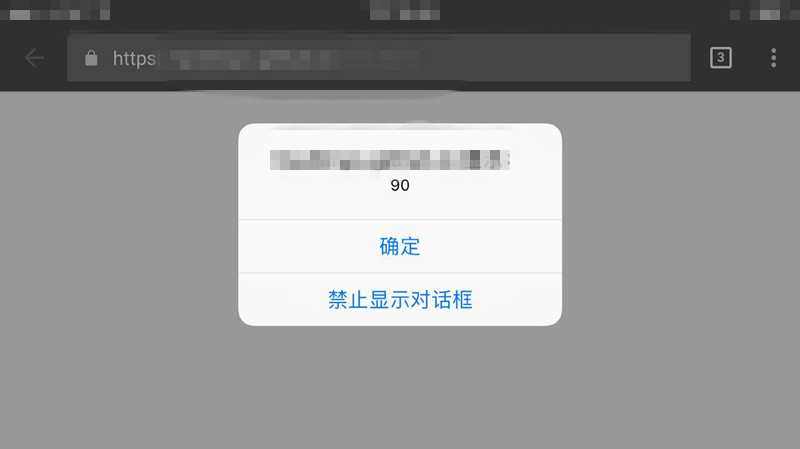

It is very significant to monitor the changes of mobile screen when you design or develop a web page for mobile devices. As we all know, the mobile phone will have totally different width and height of screen when changing its orientation, so sometimes it causes bad rendering of CSS and bad user experience. Therefore, the question of how to monitor orientation is very important for us. I will discuss three methods and their compatibilities.
1. "orientationchange" event
The mobile device has a "orientationchange" event, which is added in Safari first. And the window has an attribute to monitor the orientation —— winodw.orientation. It has three values: 90, 0, -90. The value "0" represent portrait, and "90" means left rotate, and "-90" means right rotate. Let's see an example and its effect as follows:
window.addEventListener('orientationchange',function(){
alert(window.orientation);
},false);

The picture is the screen cut from my phone. And from my test, both the Safari and Android browsers support this event. It's a good news.
2. CSS method
This is a common method, we all know that CSS has "@media" method. And this method is supported by IOS3.2+ and Android2.0+, it's also a good way.
@media all and (orientation: portrait) {
body div {background: red;}
}
@media all and (orientation: landscape) {
body div {background: blue; }
}
3. Resize event
The last one is old but gets more compatibilities. When we use resize event to monitor change of screen, we can compare innerWidth and innerHeight. When innerWidth < innerHeight, it's portrait, otherwise it's landscape.
window.addEventListener('resize', function(){
var orientation = (window.innerWidth > window.innerHeight) ? 'landscape' : 'portrait';
// do something
}, false);
Ok, all those methods to monitor orientation are mentioned above, you can select one to achieve your goals.
(That's all)